What is User Experience?
User experience, according to the Neilsen-Norman Group, refers to “All aspects of the end-user’s interaction with the company, its services, and its products.”.
We can broadly categorize user experience into 7 main factors using the User Experience Honeycomb. To achieve a meaningful and valuable user experience, the information must be:
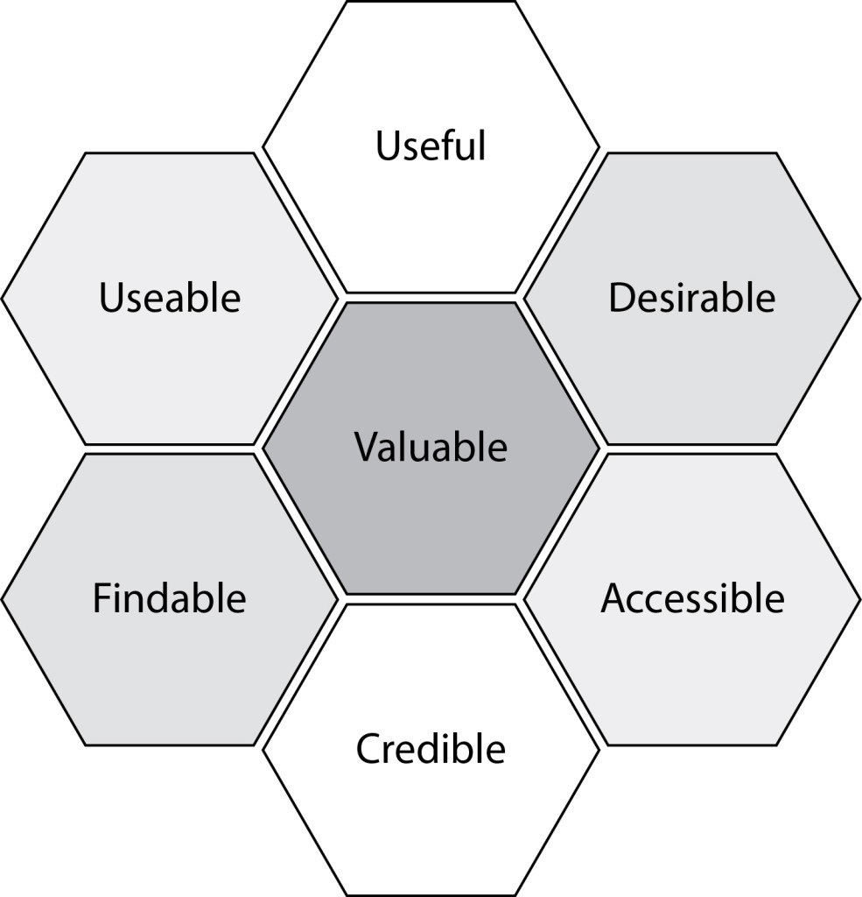
- Useful: product fulfills the users’ needs, serves a real purpose
- Findable: simple navigational structure to locate information
- Accessible: users with disabilities can have the same user experience as others
- Usable: product is simple and easy to use
- Desirable: visual aesthetics are attractive and easy to translate
- Credible: trustworthy company and products
What is UX Writing and why is it important?
As a user experience designer, we want to create intuitive interfaces and high-quality user experiences for our products. To do so, guidance is essential. This is where UX Writing comes into play.
UX Writing includes any text that displays on a user interface. Some examples would be texts in buttons or short sentences that act as call-to-actions, guiding users to complete certain actions. This may sound simple, but in reality, it is about creating an effective end-to-end experience for our users with the help of text guides.
UX Writing aims to create an effective end-to-end experience for our users with the help of guiding texts.
The goals of UX Writing are often product-centric. This is different from typical marketing copywriting, that are usually sales and business-driven instead. Overlapping goals definitely still exists between the two, so it is most effective when UX Writing tries to consider both product and business goals where appropriate.
UX Writing in NeuroBlu’s Onboarding
Taking a look at Holmusk’s flagship product NeuroBlu, we can see the distinction between UX writing vs. marketing/advertising writing by looking at the different types of onboarding modals that the Design team and I have worked on in the past months:
Product Tour
The product tour is the onboarding pop-up modal that new users will see the first time they log into NeuroBlu. This provides an overview of NeuroBlu and a brief introduction to the features we have to offer.
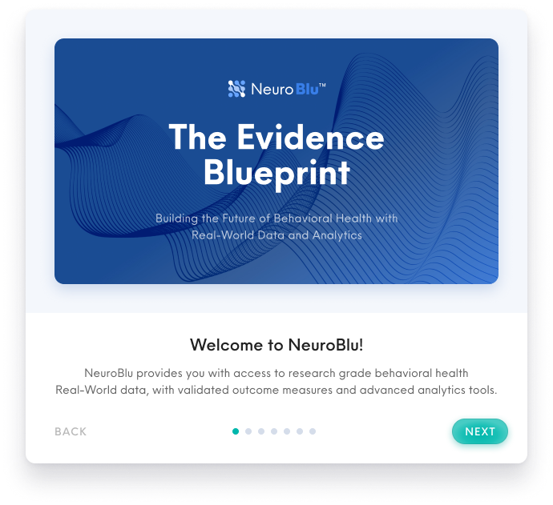
Product Tour modals that utilize marketing and advertising copywriting.
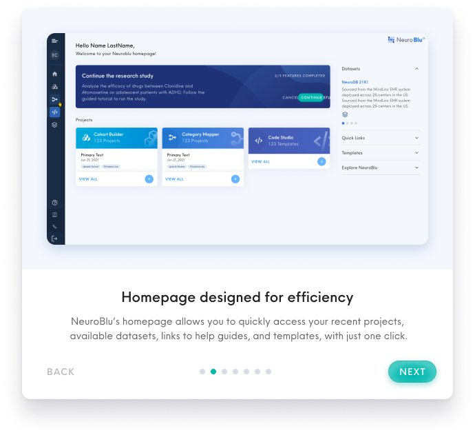
We utilize marketing/advertising phrases like “advanced analytics tools” and “designed for efficiency” in the copywriting, to provide a strong positive impression of our products upon first login to NeuroBlu. The tone used is more embellished and aims to excite new users about what NeuroBlu has to offer.
Research Study Tutorial
The research study serves as a guided tutorial to help new users to familiarize themselves with the features and interface of the product. New users will be directed to take this tutorial when they first open NeuroBlu. The tutorial provide users with instructions on how they can perform a research study using NeuroBlu products.
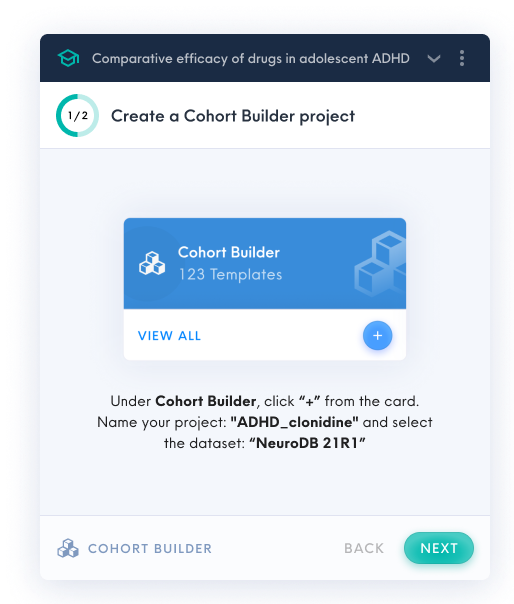
Research Study Tutorial popup windows that utilize product-driven UX writing.
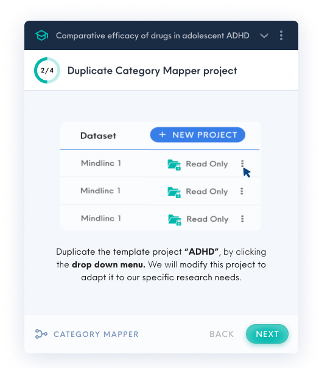
In the research study tutorial, the popup windows lean more towards UX Writing, to guide users to take specific actions, in order to familiarize themselves to the interface.
In the examples above, we use phrases like “click + from the card”, “duplicate the template”, to direct our users to complete a certain task. The language used is more instructional and succinct, which serves to direct users to click on certain buttons on the interface.
Why the need for two?
The goals of the product tour and the research study tutorial are different, although they both provide onboarding information to new users who are unfamiliar with NeuroBlu.
The product tour is the first contact point that users get with NeuroBlu when they log in for the first time. It is imperative to make a good impression here, while also giving a brief overview of what NeuroBlu has to offer. The research study tutorial on the other hand, guides users on how they can use each of NeuroBlu’s tools by themselves.
The two types of onboarding work hand in hand to provide a holistic first impression to orient new users. The slight difference in users’ mental models in the two applications thus results in the different types of writing-style used.
Microcopy: a concern for space in UI
Besides being concise and clear, UX writing is usually more restrictive in terms of space. With most interfaces designed with limited screen space, it is thus crucial to complement a highly focused layout with succinct writing.
In fact, if the copywriting content is drastically changed, designs may have to adjust to accommodate larger blocks of texts.
With mobile applications, the necessity of effective microcopy is even more apparent. This is evident in Holmusk’s mHaven Application, optimized for mobile use.
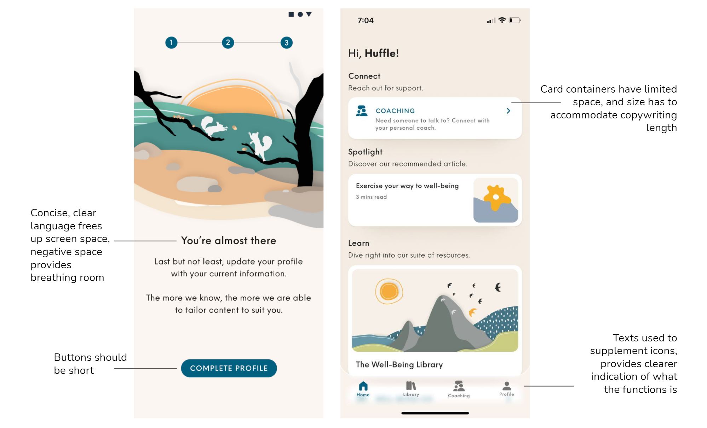
Given that mHaven has been optimized for mobile use, we must acknowledge the limited real estate space within the mobile screen.
To prevent cluttering the interface, ample negative space should be utilized to provide breathing room. If sentences were longer, the size of the card containers would increase, and the visual layout may have to change.
It is crucial to use effective words to convey the message to users clearly and concisely. After all, UX Writing in microcopies have to work together with the visual elements to form the entire user experience.
How do we develop good UX Writing?
To improve the user experience, we aim to use simple flows and clear actionable steps to prevent confusion. UX Writing thus serves a functional purpose, guiding the user through a process or navigation. This reduces user drop-off rates well.
So, how can we systematically develop effective UX writing in our products to achieve a high-quality user experience?
The best UX Writing is often the kind that goes unnoticed. It integrates with the product seamlessly, and users intuitively understands without paying much attention.
There are a few general guidelines we can apply, to improve our UX Writing:
Use concise and simple language
- Shorten sentences, keep texts succinct.
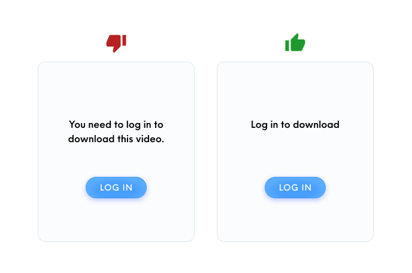
Keep writing succinct, and short.
- In most cases, use layman language and avoid technical jargon so users can easily understand any instructions.
- However, this rule also depends on who the target users are. If a product’s main users are engineers that are familiar with technical jargon, it would be more effective to keep these terms instead.
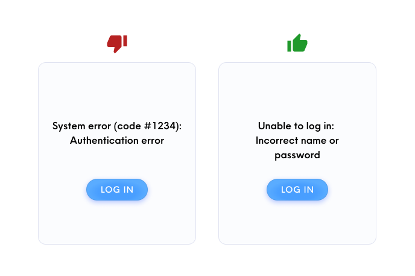
For layman users, avoid technical jargon. However, specific error codes may also be useful for troubleshooting and allow users to get direct help from customer service, so context and who the target users are will determines this copywriting decision.
Vocabulary used should be a part of the design system
- Use consistent words when it leads to the same action.
- Use the same vocabulary for buttons with the same functions.
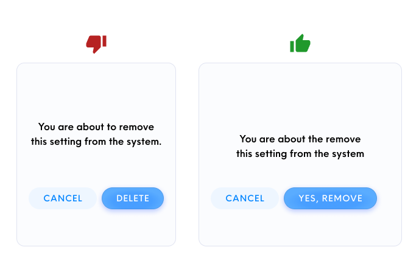
Since the copy writes: “remove settings from the system” , it should be paired with a “remove” button for consistency.
Use a consistent brand voice
- Align to the product voice and tone to cement brand identity more strongly in our users’ minds.
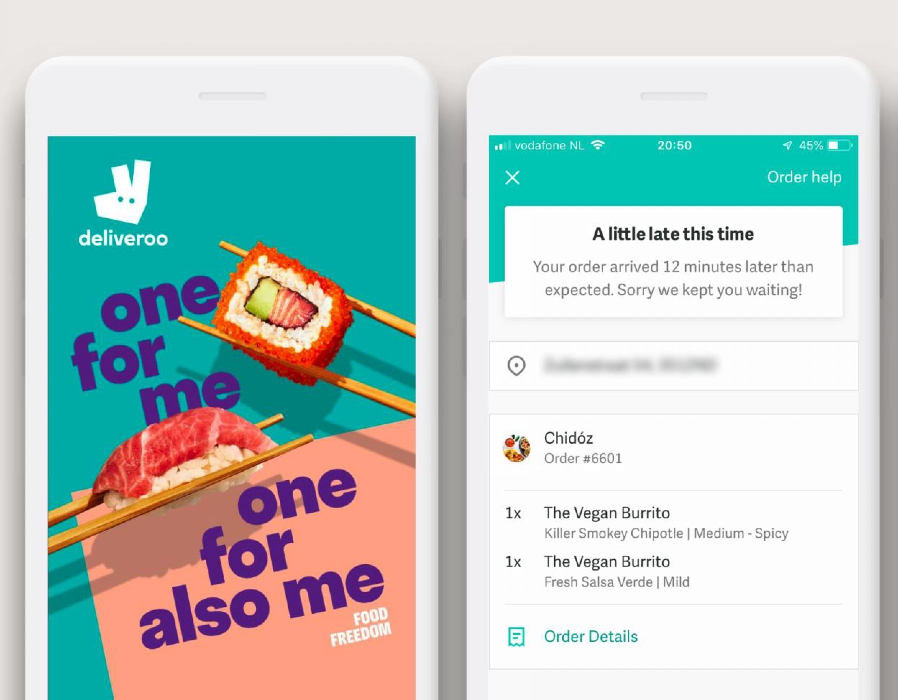
Food delivery app Deliveroo uses a cheeky and informal tone across its interface.
Research on the conventional vocabulary used in a certain application, and integrate it into the design system
- Use vocabular that users are already familiar with by comparing with other products with the same behavior.
- Use standard words that users can understand easily.
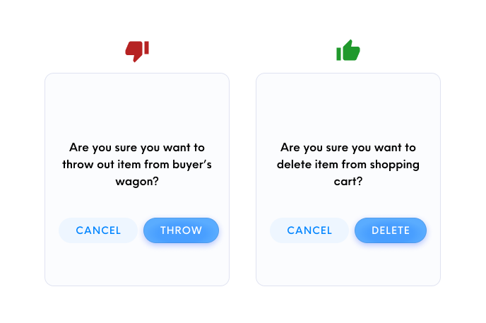
E-commerce sites use familiar words like “shopping carts”, instead of creating unique terms like “buyer’s wagon”.
Final Thoughts
UX Writing is commonly overlooked, but it actually plays a vital role in crafting a seamless and intuitive user experience. Every word used has the ability to change the conversation that our product has with our users.
UX Writing is something that everyone — designers, product teams, developers, should all take seriously when developing a product.